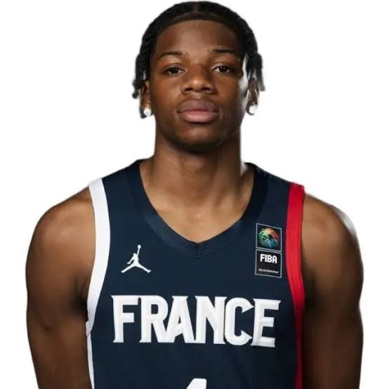
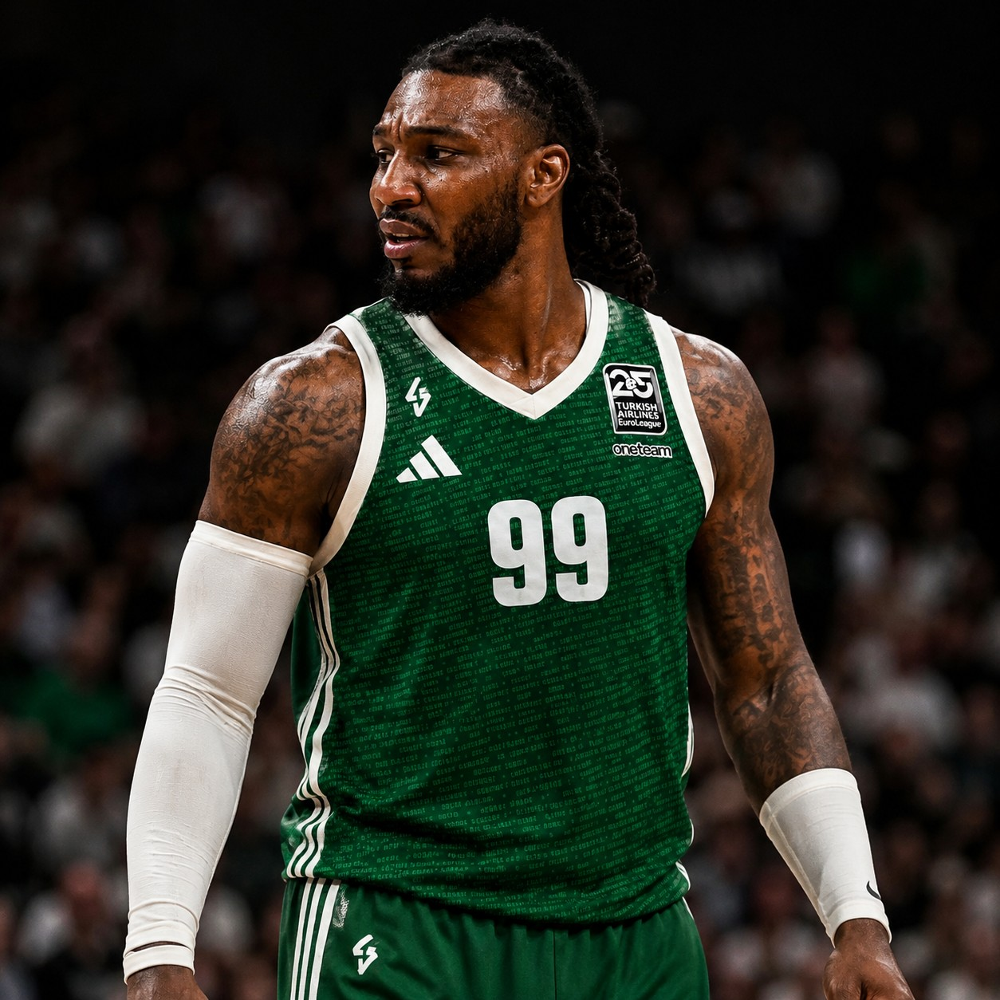
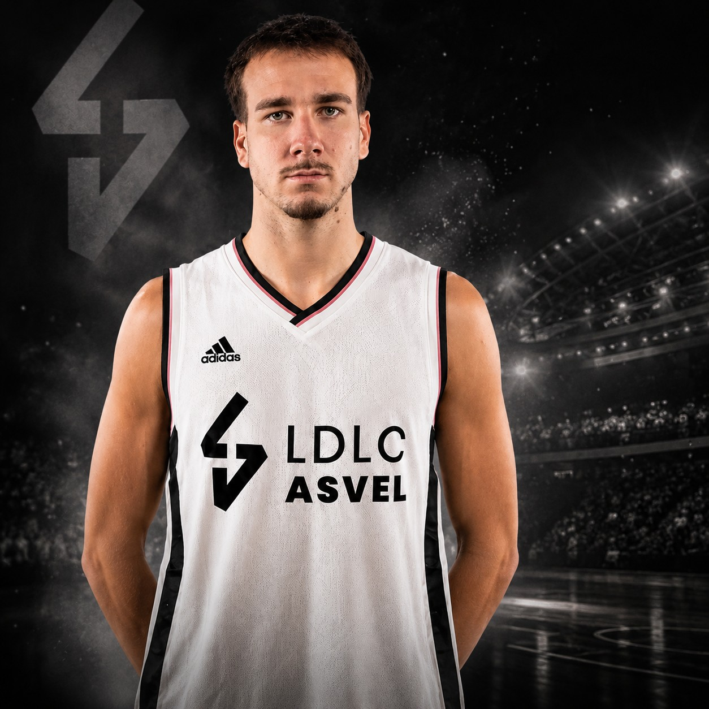
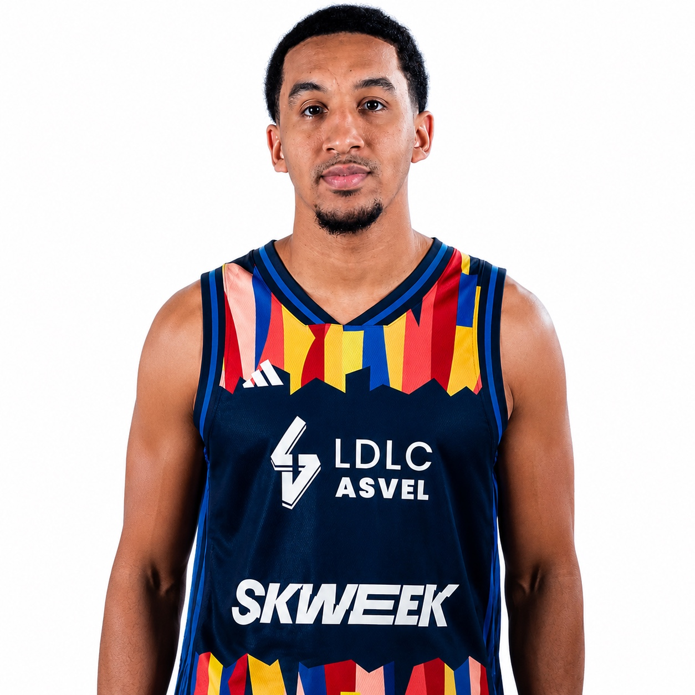
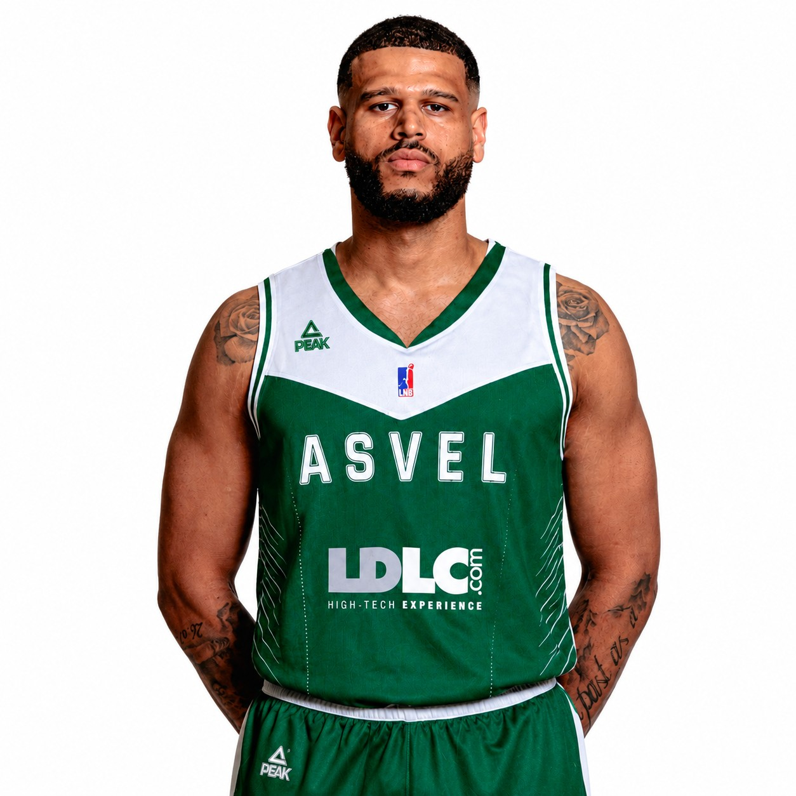
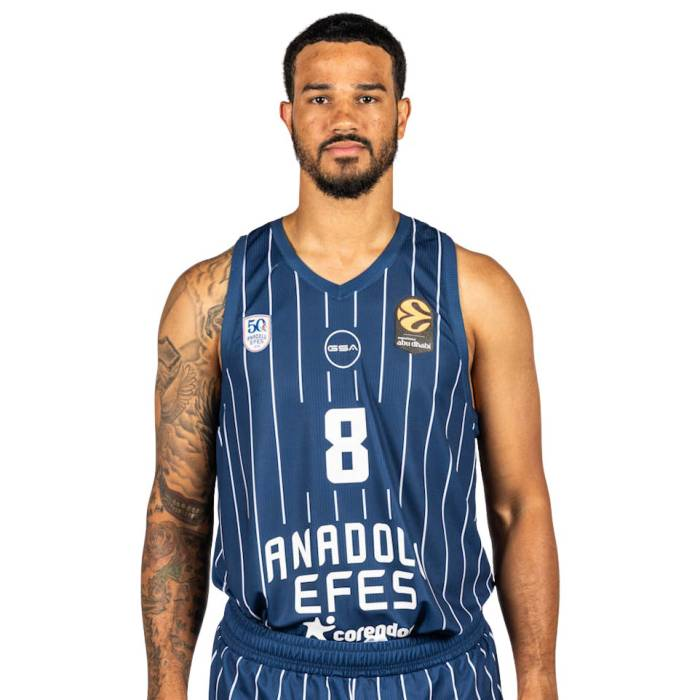
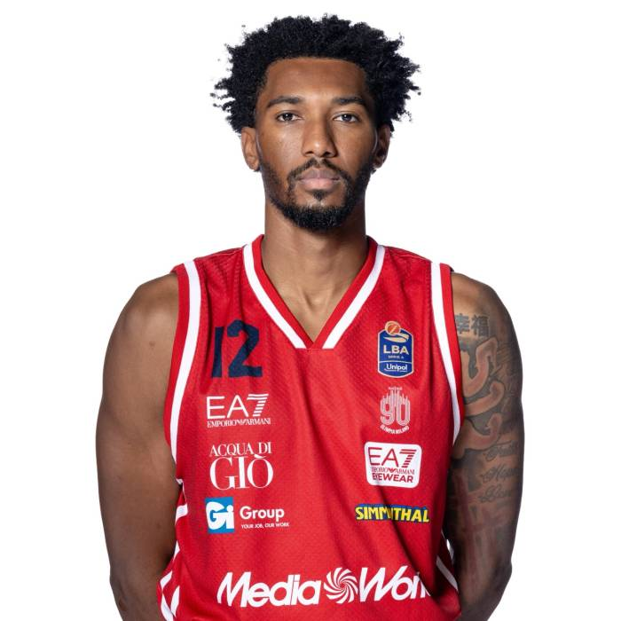

ArrivéeÉté 2026
Both Gach
AilierIntégré au groupe villeurbannais pour la saison 2026-2027.
Retrouvez dans un seul espace tous les mouvements enregistrés par l’ASVEL : les arrivées, les départs et les joueurs partis en prêt.
Utilisez les filtres pour afficher uniquement les arrivées, les départs ou les prêts.
Intégré au groupe villeurbannais pour la saison 2026-2027.

Un profil athlétique ajouté à la rotation intérieure.

L’expérience internationale au service du nouveau projet villeurbannais.

Le champion d’EuroLeague vient renforcer le secteur intérieur.
Lire sa présentation →
Un intérieur capable d’écarter le jeu grâce à son tir extérieur.
Lire sa présentation →
Jeune JFL en provenance du SLUC Nancy, où il portera le numéro 3.
Lire sa présentation →
Libre depuis la fin de son contrat avec le FC Barcelone.
Lire sa présentation →
14 saisons NBA et deux finales disputées, portera le numéro 99.
Lire sa présentation →
Arrière-meneur créatif, portera le numéro 25 à Villeurbanne.
Lire sa présentation →
Meneur portoricain passé par la NBA et les Metropolitans 92.
Lire sa présentation →
Intérieur français, auteur d’une grosse saison à Nanterre, portera le numéro 12.
Lire sa présentation →Ancien premier tour de Draft NBA, découvrira l’EuroLeague à Villeurbanne.
Lire sa présentation →
Arrivé durant l’intersaison avant d’être prêté une saison à l’Étoile Rouge de Belgrade.

Arrivé durant l’intersaison avant d’être prêté une saison à Valence.
A quitté le projet villeurbannais pendant l’intersaison.
Prêté pour une saison à l’Étoile Rouge de Belgrade.
Prêté pour une saison au Valencia Basket.
A quitté Villeurbanne au cours de l’intersaison.
Le Sénégalais quitte l’ASVEL après trois saisons passées à Villeurbanne.
Lire l’article →Ne poursuit pas l’aventure avec le club villeurbannais.
Quitte l’effectif de l’ASVEL durant l’intersaison.
Ne fait plus partie de l’effectif villeurbannais.
Quitte Villeurbanne à l’issue de la saison.
Poursuit sa carrière loin de l’ASVEL.
Ne poursuit pas l’aventure dans le Rhône.
Quitte le groupe villeurbannais durant l’intersaison.
Son passage à Villeurbanne prend fin cet été.
Ne figure plus dans l’effectif de l’ASVEL.
Quitte le secteur intérieur villeurbannais.
Ne poursuit pas son parcours sous les couleurs de l’ASVEL.
L’international allemand rejoint l’Étoile Rouge de Belgrade sous la forme d’un prêt d’une saison.
L’arrière américain rejoint le Valencia Basket sous la forme d’un prêt d’une saison.
À noter : un joueur peut apparaître dans plusieurs catégories lorsqu’il est arrivé pendant l’été avant de repartir. Nick Weiler-Babb et Armoni Brooks figurent ainsi dans les départs et dans les prêts.